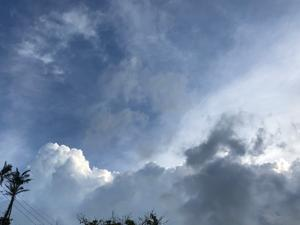
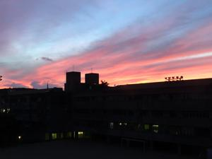

うるがいの話 ある日
最新:
入道雲
うるがいとは 前提知識です
カニの画像をクリックすると『うるがいの話』サイトを表示します

うるがい(ｳﾙｶﾞｲ urugai)とは、『もずくがに』の名前でとても大きくなります。

たながー（ﾀﾅｶﾞｰtanagaa）とは手長えびのことで、何種類かあり大きいのは車
エビぐらいになります。

ぶながー(bunagaa)とは、赤い髪の毛、赤い身体、そして身長は１ｍ２０ｃｍ
ぐらい、川の蟹を食べているの目撃された。場所は沖縄県国頭郡大宜味村のと
ある村僕の隣近所に住んでいる爺さんから、聞いた話です。
2021年07月11日 (日）入道雲
16:15


空一面が青から、入道雲が沢山みられるようになった。これも夏の空である。
昨日も今日も、いつ雨が降ってくるのか干している洗濯物を気にしながら過ご
す。昨日、ワクチン接種券が届き再来週に、接種の予約を取る。いよいよか、
ステップアップ、前に進んでいる。